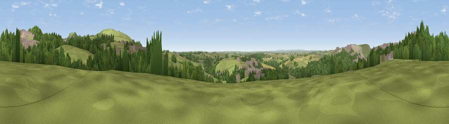

Viewpoint near Trethosa
#19906 in England · top 36% of its area beats it · near TrethosaWhere it is
The exact computed spot (SW 94725 54275). Click the marker for map links.
The view, rendered

A 360° render of this exact spot computed from the terrain model, tree cover and land cover — summer colours, afternoon light, calibrated against photographs of famous viewpoints. Real trees, hedges and buildings will differ in detail.
The panorama
Grey silhouette: terrain skyline in each direction (720 bearings, Earth curvature and refraction included). Dashed green: skyline with trees (+15 m) and buildings (+8 m) as obstacles. Blue strip: how far the ground is visible on each bearing.
Where the view opens
Wedge length = distance to the farthest visible ground on that bearing (vegetation-aware). Rings at 10, 25 and 50 km.
What fills the view
51% grassland · 27% woodland · 14% built-up · 7% cropland · 1% bare ground
Angular shares of the visible panorama (visual magnitude), not map area. Landscape diversity 0.53 (0–1 Shannon).
Key numbers
More beautiful places nearby
The staircase of upgrades: each row has a higher view potential than everything closer. Driving times are estimates from straight-line distance, calibrated against real road routing — check an actual route before setting out.
| Place | Direction | Drive | Score |
|---|---|---|---|
| Viewpoint near Trethosa | NNW · 0 km | ~2 min | 66.9 |
| Treviscoe Hill | N · 2 km | ~6 min | 81.8 |
| Viewpoint near Foxhole | E · 3 km | ~7 min | 86.4 |
| Viewpoint near Stenalees | ENE · 6 km | ~13 min | 88.0 |
| Viewpoint near Crackington Haven | NNE · 44 km | ~64 min | 88.1 |
| Viewpoint near Combe Martin | NNE · 114 km | ~138 min | 88.9 |
| Holdstone Hill | NNE · 115 km | ~139 min | 90.2 |
| The Knoll | ENE · 162 km | ~184 min | 91.0 |
50.35251, -4.88693 · source: screening · position refined by local search. Computed location — check access rights before visiting.